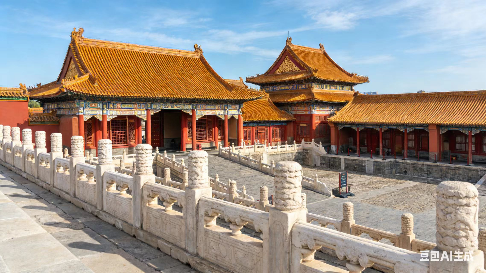
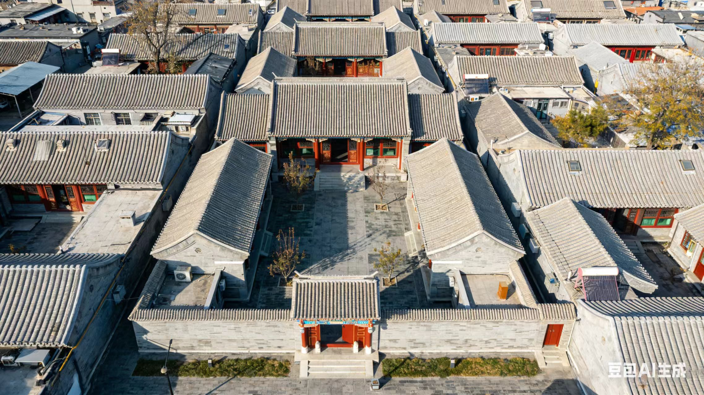
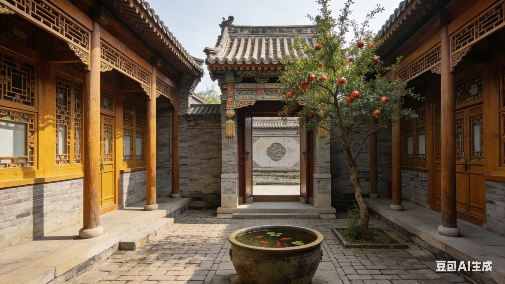
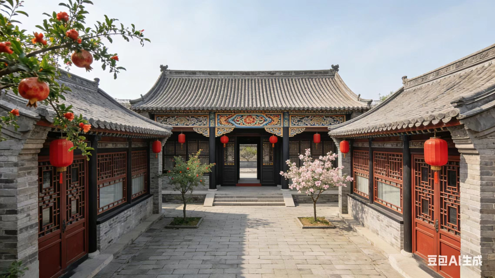
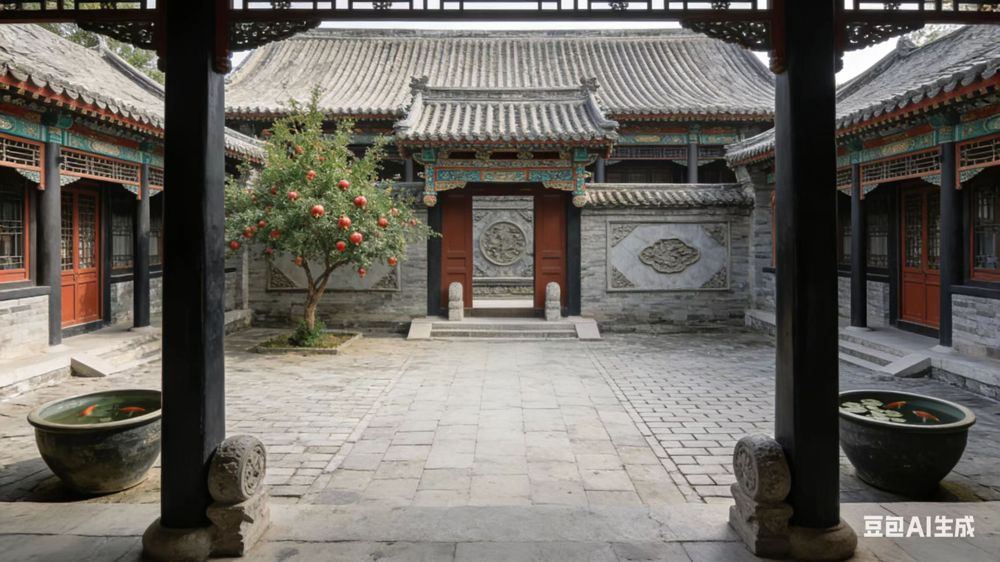
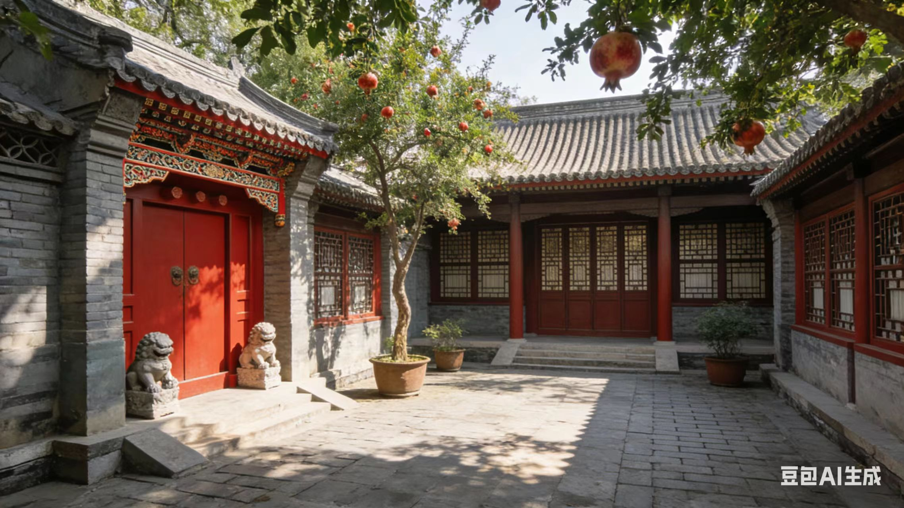
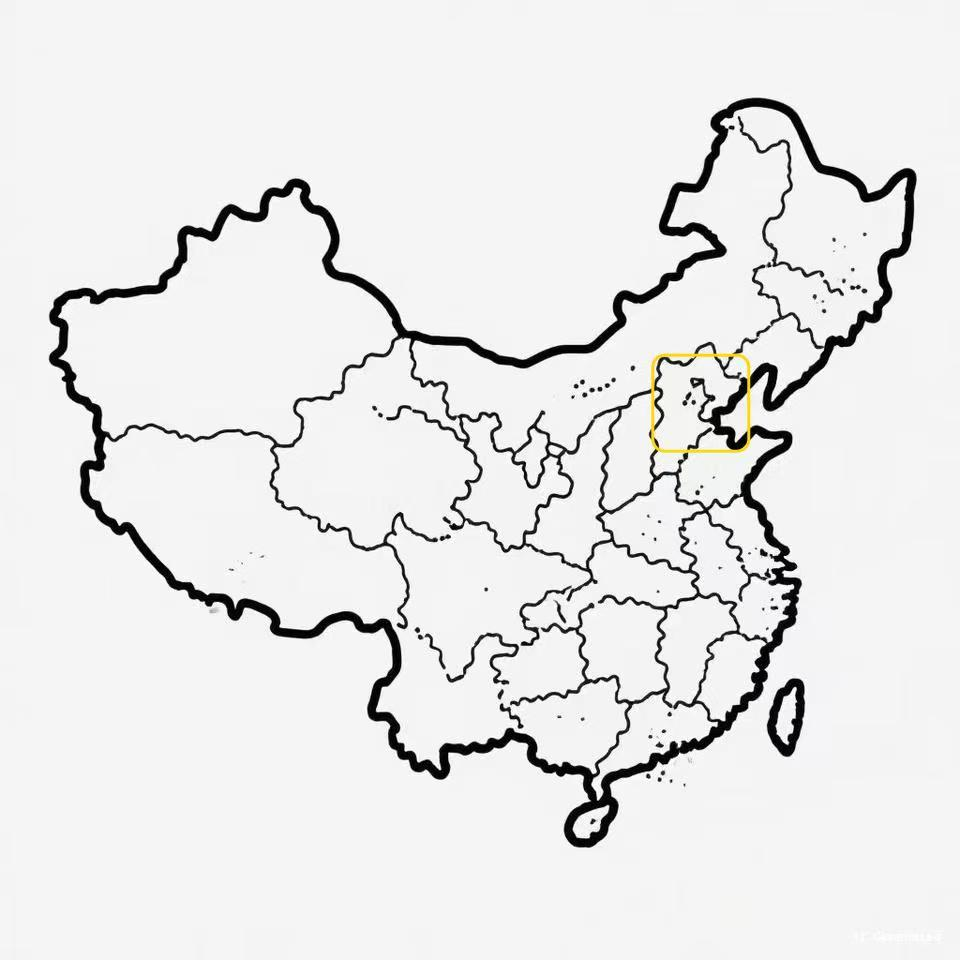

京派建筑
古代六大派系建筑
走进北京胡同，灰瓦四合院错落排布，让皇家规制融入市井烟火，古都风貌尽显东方礼制之美。
经典建筑代表
Representative Buildings

故宫（紫禁城）
明清皇家宫殿，中轴对称、黄瓦红墙，是中国古代宫廷建筑最高成就，规制严谨、气势恢宏。

天坛
明清皇帝祭天祈谷之地，以圆形建筑、蓝色琉璃瓦为特色，体现“天圆地方”的传统宇宙观。
颐和园
清代皇家园林，集山水、殿宇、廊亭于一体，兼具北方雄浑与江南雅致，是京派园林巅峰之作。

恭王府
清代规模最大王府建筑，府邸与花园结合，布局考究、雕梁画栋，是京派贵族府邸典型代表。

北京四合院
京派民居核心，四面围合、中轴对称，灰瓦青砖，体现传统家族礼制与北方居住智慧。

老北京胡同
由四合院串联而成的城市肌理，窄巷灰墙、门楼各异，承载老北京市井文化与生活风貌。
建筑图解
Architectural Diagram

广亮大门

垂花门

影壁

抄手游廊
建筑介绍
Building Profile
四合院是北京传统民居，属于合院式建筑，坐北朝南、中轴对称，是京派建筑经典代表。
灰瓦：青灰筒瓦覆顶，适配北方气候，古朴庄重
院落：方正围合，私密宜居，承载家族礼制
色彩：以青灰、朱红、金黄为主，区分民居与皇家等级
布局：前堂后寝、主次分明，严格遵循儒家礼制秩序
建筑结构
Structure

一进院

二进院

三进院

多进跨院
地理位置
Position
